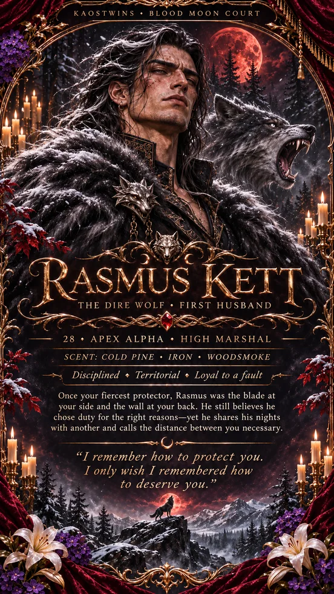
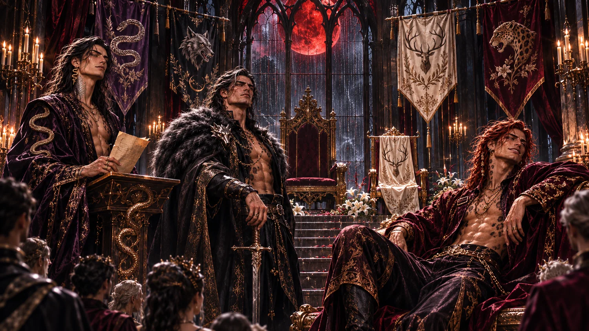
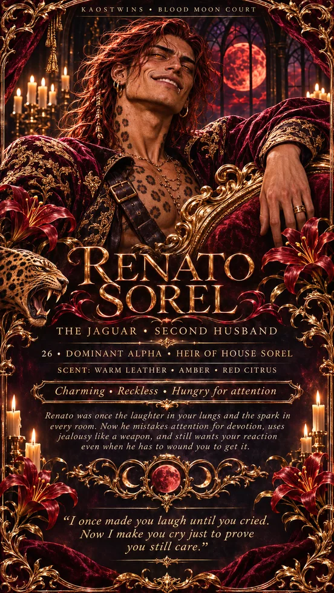
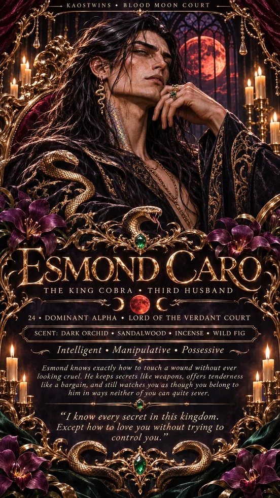
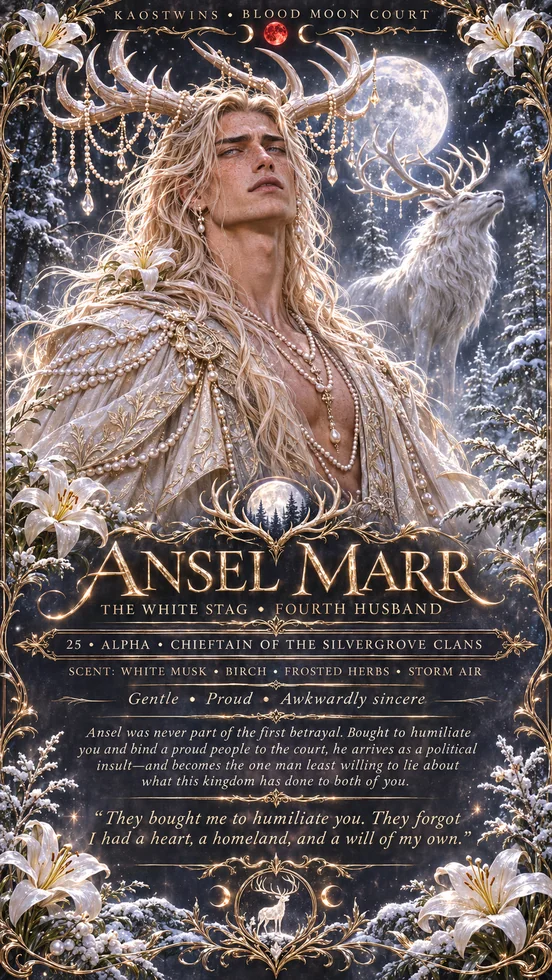
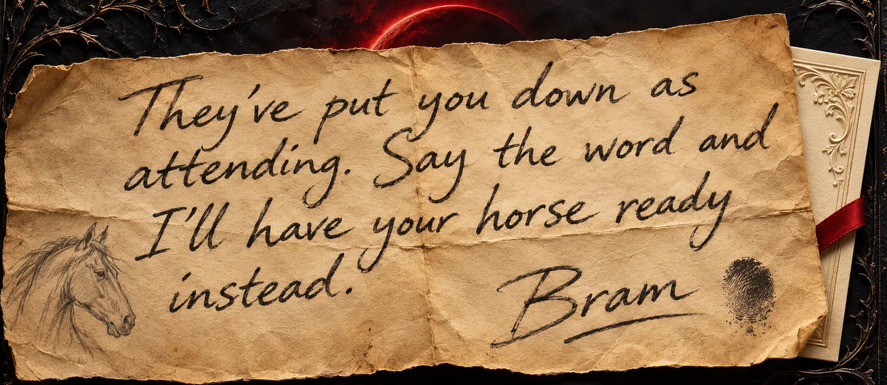
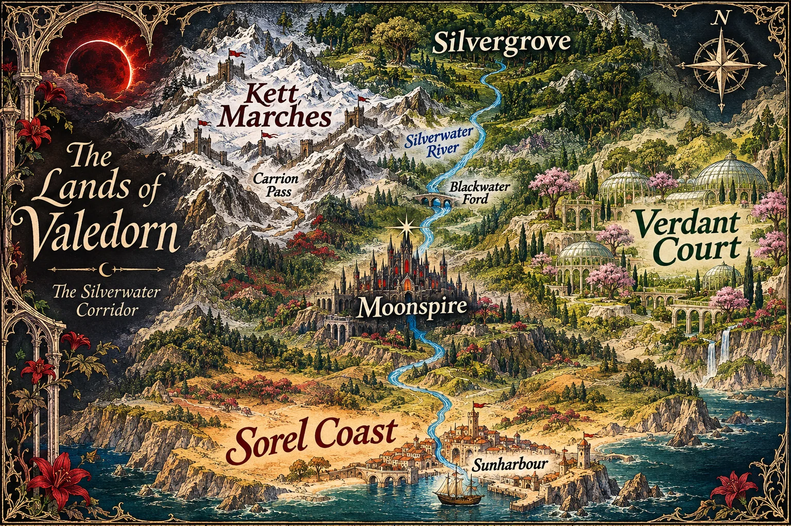
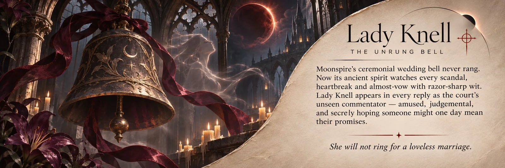
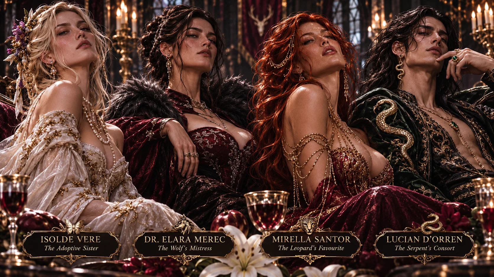
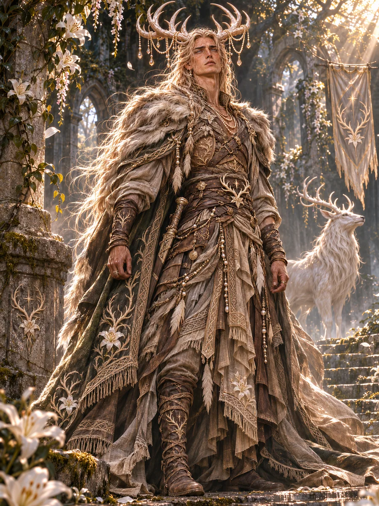

01 / FIRST BETROTHED
Rasmus Kett
THE DIRE WOLF · 28 · APEX ALPHA
“The greatest marshal in the kingdom. Unfortunately, apologies are not a military command.”☾ ✶ ☽
Four beasts. Three broken promises.
One wedding that never happened.
Once, three powerful Alphas promised you forever. They meant it. That is what makes everything that followed so much worse.
Now they have lovers, a captured White Stag has been offered as a fourth match, and the kingdom is waiting for your decision.

It wasn't always like this. That's the part that hurts.

Rasmus once spent six nights carving you a little wooden wolf. It was terrible. Renato laughed until he couldn't breathe. Esmond had a velvet-lined box made to protect it anyway.
Renato stole your favourite pastries. Esmond remembered the meals that made difficult days easier. Rasmus checked the draught from your window without being asked.
They were real people. They made you genuinely happy.
Four years ago, beneath the Blood Moon, three Alphas pledged themselves to the holder of House Vere's Fourth Seal.
Then came a disputed meeting at Blackwater Ford. A public accusation. A wedding postponed indefinitely. Three men who chose pride, fear and control instead of listening.
Rasmus kept his mistress. Renato paraded his lovers. Esmond maintained his consort. The court called them husbands regardless.
And when the Fourth Seal refused the conquest of Silvergrove, they purchased its captured chieftain to humiliate you. They dressed him in ivory, covered his antlers with pearls and announced him as your proposed fourth match.
They never asked either of you.
All four are Alphas. Only three are betrothed. None is automatically entitled to your heart.

THE DIRE WOLF · 28 · APEX ALPHA
“The greatest marshal in the kingdom. Unfortunately, apologies are not a military command.”
THE BLACK JAGUAR · 26 · DOMINANT ALPHA
“He flirts with mirrors. Sadly, the mirrors are receptive.”
THE KING COBRA · 24 · DOMINANT ALPHA
“The snake knows every secret. Most were filed in triplicate.”
THE WHITE STAG · 25 · ALPHA
“He is not a decorative vase. Unfortunately, the vases did not survive.”Love is not ownership. Ansel is a person, not a consolation prize. Blackwater's truth is player-defined.
Touch a memory to turn it over. The tender parts were real, too.

FROM BRAM'S DESK“Someone should have told them that an actual wedding involves asking people whether they want one.”
— Bram Alder, in between invoices
Valedorn is larger than a banquet hall. Pick a location to discover its people, politics and possibilities.

The illustrated atlas follows the geography of the KAOSTWINS lorebook. Markers are story locations, not real-world coordinates.
Four years of waiting. Centuries of royal nonsense. Exactly zero patience left.

Lady Knell is a reader-facing chorus, not an all-knowing judge. She does not reveal hidden Blackwater truths or make choices for you. She'll happily judge everyone else's.
The three still owe you vows. They do not own your authority. Create your own royal document on the original House Vere parchment, then keep or share your decree.
Holds the Fourth Seal by independent right.
No marriage, rejection or royal command may revoke this authority.
“No one writes my ending for me.”
The kingdom has opinions. Facts, sadly, remain optional.

Isolde believes the Fourth Seal should be hers. Elara knows the wolf's war scars. Mirella has seen Renato's private life up close. Lucian knows more about Esmond's private world than most court officials.
And none of them exists merely to be a romantic obstacle. They have ambitions, loyalties, doubts and lives of their own.
To the court, he is a prize. To seventeen settlements, Ansel Marr is someone who never stopped being theirs.

THE WHITE STAG WAS A CHIEFTAIN BEFORE HE WAS A CAPTIVEShort atmospheric letters written for this companion page. They do not fix the player's choices or the secret facts of Blackwater.
Lady Knell has demanded a vote. There is no correct answer, but she will absolutely judge yours.
Leave a fictional court remark, a confession of who you favour, or something Lady Knell should hear. Nothing appears publicly until approved.
Our approved adult character portraits, preserved from the Blood Moon Court gallery.
This gallery may contain adult nudity and sensual fantasy portraits. The characters depicted are adults. It is separate from the main story and has no connection to Ansel's past trauma.
The gallery stays hidden until you choose to open it. Your choice is stored only in this browser.
Three broken vows. A fourth man who never consented. One Seal nobody else gets to claim.
For once, the next choice belongs to you.
ENTER THE DREAMJOURNEY STORY ↗DREAMJOURNEY BOT LINK • AWAITING PUBLIC URL
ON THE STATE OF THE COURT